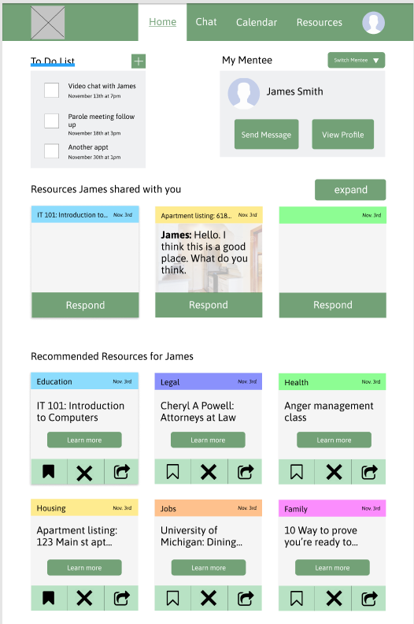

SI 487: Research Design Lab · Team member
UX Research · UX Design
Google Slides · Paper Prototyping · Figma
Competitive Analysis · Persona/Scenarios · Paper Prototyping · Wireframing · Hi-fi prototyping
For our semester project, we were given the CHI 2019 Student Design Competition Prompt to create something that "weaved the threads within the social fabric". From this prompt, we decided to create an online platform for formerly incarcerated individuals (returning citizens) that can connect them with returning citizens who have successfully reintegrated into society. This product was created with the framework of rehabilitating incarcerated individuals so they can return and thrive post-incarceration.
Primary Competitors: Second Chance Jobs for Felons, Help for Felons, exoffenders.net
Secondary Competitors: Pigeon.ly, sponsorsinc.org, The University of Michigan App
Within the competitive analysis, the criteria we will examine was ease of use/level of accessibility, trustworthiness, language level, quality of information/information accuracy, and searchability.
Our team created four personas, with the first three as mentees with differing education and technological literacy levels and the last as the mentor.
We are going to be focusing mainly on the mentor/mentee relationship aspect of the website for the wireframes, and there will hopefully be 30 interactions or less for that portion. On the user flow, the blue sticky notes represent the wireframes.
In order to quickly and easily create iterative designs and layouts for the online platform, we developed these paper prototypes. This is the final paper prototype we developed after two iterations.
V1 example
Through these wireframes, we got tons of feedback about information heirarchy, user flow, and the general aesthetics of the product.
Mentee Final Prototype.
Mentor Final Prototype.